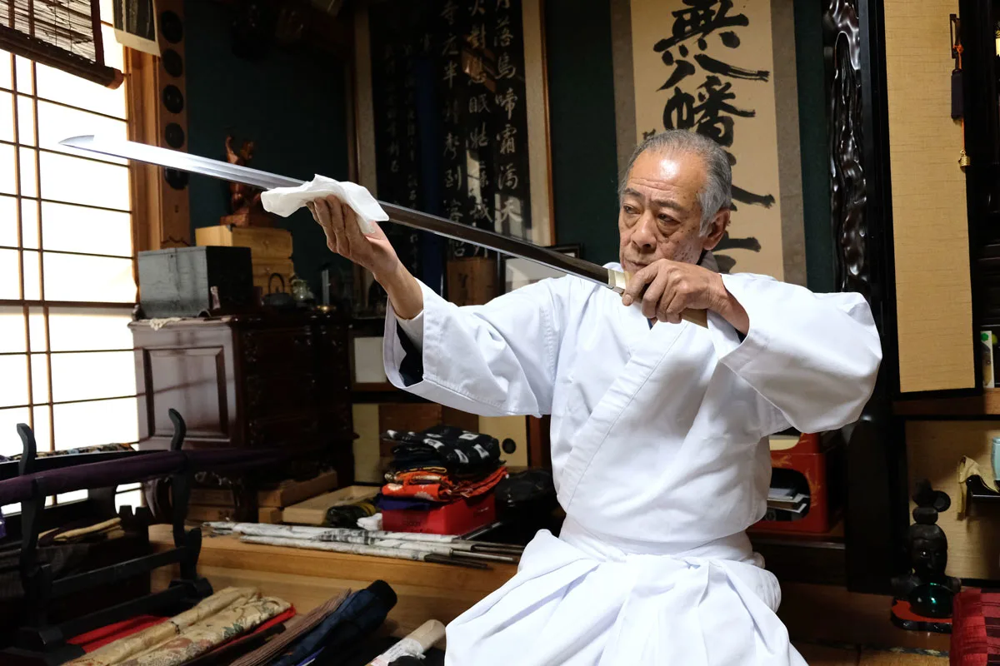

Crafting Process
From design to temper, our forging process marries tradition and technology. Clay tempering, folding, hand polishing and other time-honored techniques produce durable, razor-sharp katana. We complement ancient methods with modern materials science for optimum strength and accuracy. Our craftsmen have decades of experience creating museum-quality sword art.
